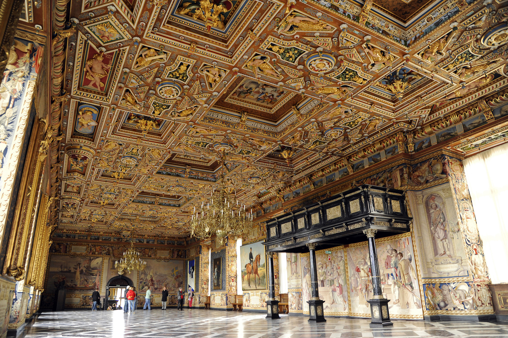
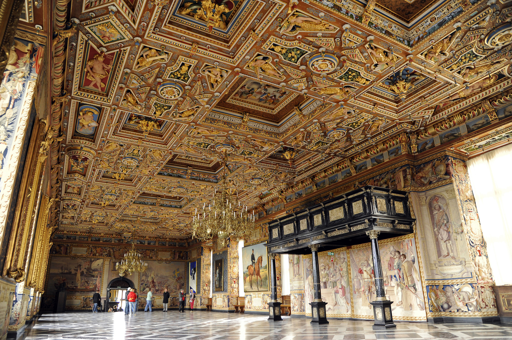
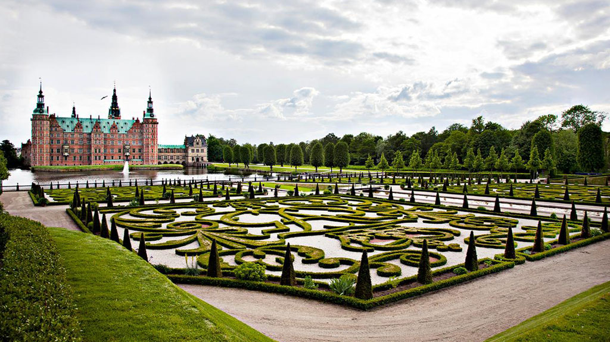
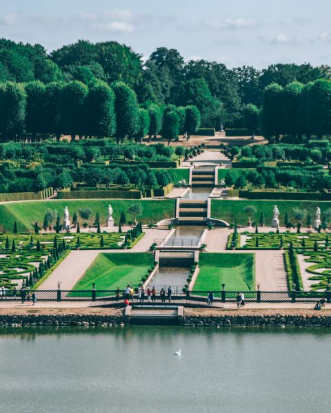
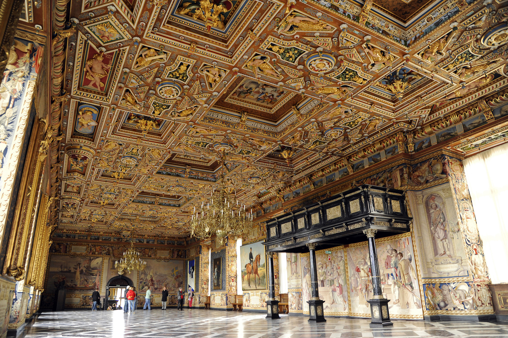

The Throne Room
 

The Gardens
 back to home
Unlike the other two royal families, these two royal family are much less known. Even if they are not as well known, doesn't mean their castles and palaces are less equisite. In fact they are just a stunning as the other two palaces and castles I have mentioned. Don't let their less famous name throw you off, you'll regret it.
There's a pretty good chance you haven't heard of the Portugese Royal Family. I hadn't even heard of them before traveling there. There are two main reasons for this. One, portugal is a pretty small country. Two, the royal family is no longer in power. Even with no royal family, their palces and castles are stunning. I have seen many of them, and can say from personal experience they are equisite and well worth your time. So what are you waiting for?

This palace is an incredible way to spend your day. It is 45 miinutes away from Lisbon, so an easy and great way to spend a day in Portugal. You don't want to miss this palace. not only is the palace itself beautiful, the views are just incredible. when I visited portugal It was by far one of my favorite palace I visited.

This is another lesser known royal family that is worth your knowing. Unlike Portugal they are still ruling Denmark. they are also seen by many as the perfect royal family. Even if you don't know thier family you should defenitally know the palaces they own. Don't mistake their modesty when it comes to fame, with simple castles. In fact it's the exact opposite. You won't undertestimate their power after you visit these castles. so what are you waiting for?

This is a beautiful palace that is well worth your time. Just 30 minutes from the city of Copenhagan, it's a perfect way to spend a sunny day. It's rooms and landscape are just astounding with its details put into each floor, each crown molding, each uphostery. You won't forget teh experience of this palace
